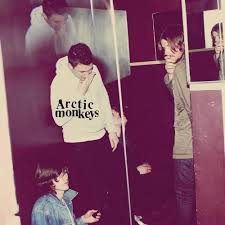

Titulo del disco: Humbug
Año lanzamiento: 2009
Humbug es el tercer álbum de estudio de la banda inglesa de indie rock
Arctic Monkeys lanzado el 19 de agosto de 2009 por Domino Records. La
banda comenzó a escribir canciones para el álbum a partir del verano de
2008, y lo terminó completamente en primavera del 2009.
- Cancion favorita #1: Crying Lighting
- Cancion favorita #2: Secret Door
- Cancion favorita #3: My Propeller

Titulo del disco: AM
Año lanzamiento:2013
Descripción:AM es el quinto álbum de estudio de la banda inglesa de
Indie Rock, Arctic Monkeys. Fue lanzado el 9 de septiembre de 2013, bajo
el sello Domino Records. El 15 de julio de 2013, revelaron la portada
del álbum. Es el álbum musical de rock más stremeado de todos los
tiempos.
- Cancion favorita #1: One for the Road
- Cancion favorita #2: Arabella
- Cancion favorita #3: Snap Out of It